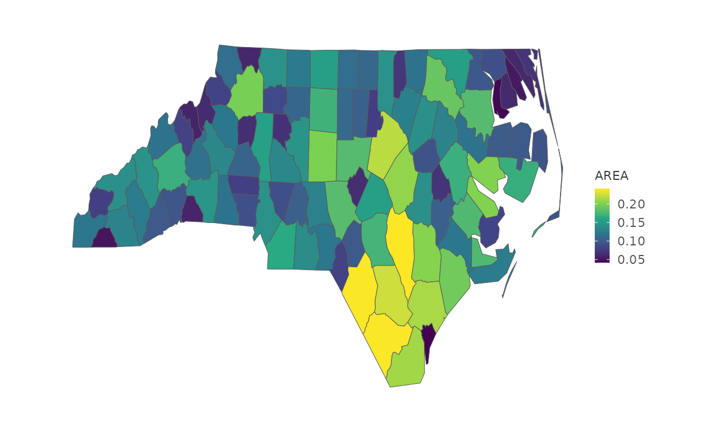

本页解决什么问题：Map data with
mark_map()+project_map(). 前置：已完成 gallery-proportions
下一步：→ gallery-annotations
Map support requires sf. mark_map() draws
sf polygons; coordinate projection is handled by
project_map().
Choropleth
if (requireNamespace("sf", quietly = TRUE)) {
nc <- sf::st_read(system.file("shape/nc.shp", package = "sf"), quiet = TRUE)
nc |>
plotit(encode(fill = AREA)) |>
mark_map() |>
scale_fill(range = "viridis") |>
project_map()
}
#> Scale for fill is already present.
#> Adding another scale for fill, which will replace the existing scale.
Point symbols over a map
nc |>
plotit(encode(x = 1, y = 1)) |>
mark_map(fill = "grey90", colour = "grey50") |>
mark_point(mapping = encode(x = lon, y = lat), data = nc, size = 0.8)Recipe: spike / lollipop map (R-16)
mark_spoke on lon/lat (zero-length stems) gives radial
bars; overlay it on a mark_map base with
project_map.
if (requireNamespace("sf", quietly = TRUE)) {
nc |>
plotit(encode(fill = AREA)) |>
mark_map() |>
scale_fill(range = "viridis") |>
project_map()
}
#> Scale for fill is already present.
#> Adding another scale for fill, which will replace the existing scale.